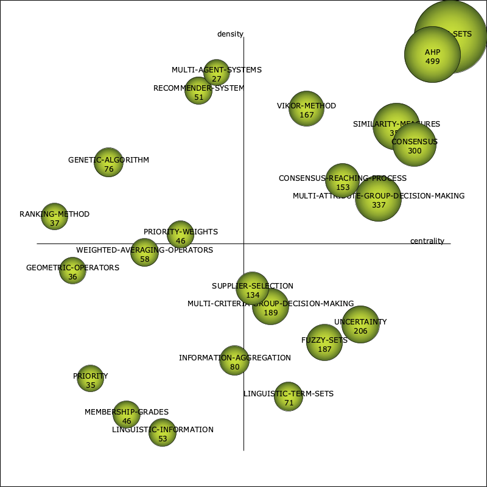

| Performance measure | Strategic diagram |
| unionDocuments-documentsCount |  |
| unionDocuments-hIndex | |
| unionDocuments-sumCitations |
| Name | Centrality | Centrality range | Density | Density range |
| TERM-SETS | 66.3 | 1 | 15.36 | 1 |
| AHP | 41.74 | 0.96 | 10.03 | 0.96 |
| CONSENSUS | 36.82 | 0.91 | 5.82 | 0.74 |
| SIMILARITY-MEASURES | 29.96 | 0.87 | 7.45 | 0.78 |
| MULTI-ATTRIBUTE-GROUP-DECISION-MAKING | 27.22 | 0.83 | 3.92 | 0.61 |
| VIKOR-METHOD | 17.22 | 0.65 | 7.58 | 0.83 |
| UNCERTAINTY | 24.07 | 0.78 | 2.52 | 0.3 |
| CONSENSUS-REACHING-PROCESS | 20.59 | 0.74 | 4.19 | 0.65 |
| FUZZY-SETS | 18.44 | 0.7 | 2.32 | 0.26 |
| SUPPLIER-SELECTION | 15.23 | 0.52 | 2.7 | 0.39 |
| MULTI-CRITERIA-GROUP-DECISION-MAKING | 16 | 0.57 | 2.6 | 0.35 |
| LINGUISTIC-TERM-SETS | 16.29 | 0.61 | 1.54 | 0.13 |
| INFORMATION-AGGREGATION | 12.32 | 0.48 | 1.55 | 0.22 |
| WEIGHTED-AVERAGING-OPERATORS | 6.3 | 0.26 | 3.52 | 0.48 |
| RECOMMENDER-SYSTEM | 7.79 | 0.39 | 8.19 | 0.87 |
| GENETIC-ALGORITHM | 4.88 | 0.17 | 5.17 | 0.7 |
| MULTI-AGENT-SYSTEMS | 9.52 | 0.43 | 8.55 | 0.91 |
| PRIORITY-WEIGHTS | 7.17 | 0.35 | 3.54 | 0.52 |
| RANKING-METHOD | 1.9 | 0.04 | 3.87 | 0.57 |
| MEMBERSHIP-GRADES | 5.08 | 0.22 | 1.45 | 0.09 |
| LINGUISTIC-INFORMATION | 6.59 | 0.3 | 1.31 | 0.04 |
| GEOMETRIC-OPERATORS | 3.07 | 0.09 | 3.26 | 0.43 |
| PRIORITY | 4.59 | 0.13 | 1.55 | 0.17 |
| Name | unionDocumentsdocumentsCount | unionDocumentshIndex | unionDocumentssumCitations |
| TERM-SETS | 757 | 54 | 11,079 |
| AHP | 499 | 44 | 7,213 |
| CONSENSUS | 300 | 39 | 4,944 |
| SIMILARITY-MEASURES | 352 | 40 | 4,968 |
| MULTI-ATTRIBUTE-GROUP-DECISION-MAKING | 337 | 35 | 4,871 |
| VIKOR-METHOD | 167 | 26 | 2,326 |
| UNCERTAINTY | 206 | 25 | 2,274 |
| CONSENSUS-REACHING-PROCESS | 153 | 27 | 2,828 |
| FUZZY-SETS | 187 | 24 | 2,284 |
| SUPPLIER-SELECTION | 134 | 22 | 1,735 |
| MULTI-CRITERIA-GROUP-DECISION-MAKING | 189 | 31 | 3,169 |
| LINGUISTIC-TERM-SETS | 71 | 21 | 1,413 |
| INFORMATION-AGGREGATION | 80 | 15 | 941 |
| WEIGHTED-AVERAGING-OPERATORS | 58 | 16 | 1,005 |
| RECOMMENDER-SYSTEM | 51 | 14 | 720 |
| GENETIC-ALGORITHM | 76 | 13 | 564 |
| MULTI-AGENT-SYSTEMS | 27 | 6 | 109 |
| PRIORITY-WEIGHTS | 46 | 13 | 523 |
| RANKING-METHOD | 37 | 10 | 420 |
| MEMBERSHIP-GRADES | 46 | 18 | 1,027 |
| LINGUISTIC-INFORMATION | 53 | 16 | 799 |
| GEOMETRIC-OPERATORS | 36 | 11 | 489 |
| PRIORITY | 35 | 13 | 361 |